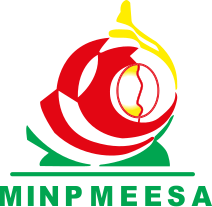

Northwest Digital Readiness Survey
DIRA is funding and carrying out the Northwest Digital Readiness Survey (NWDRS) across the North West Region's seven divisions. The programme is an institutional partnership with the North West Regional Delegation of the Ministry of Small and Medium-Sized Enterprises, Social Economy and Handicrafts (MINPMEESA), and has received government endorsement. It assesses digital needs among small and medium-sized enterprises (SMEs), cooperatives and social-economy organisations.
Programme focus
SMEs, cooperatives and social economy
Geographic scope
North West Region, seven divisions
Assessment target
30–50 organisations
Duration
Eight months
Institutional partner
North West Regional Delegation of MINPMEESA
Investment
Over 70 million XAF committed by the DIRA Group
Institutional partner

North West Regional Delegation of MINPMEESAAssessing technology needs
Through NWDRS, DIRA assesses how organisations use technology across member and client records, loan and operational workflows, financial reporting, connectivity and staff skills.
The programme includes microfinance institutions (MFIs) and cooperative credit unions, alongside small and medium-sized enterprises (SMEs), Common Initiative Groups (GICs) and other social-economy organisations. By identifying operational gaps before recommending tools or systems, DIRA helps each organisation focus on improvements suited to its needs.
Delivered in institutional partnership with MINPMEESA and with government endorsement, NWDRS reflects DIRA's experience assessing technology needs across different organisations and sectors.
Seven assessment areas
DIRA's on-site assessment reviews current tools, workflows and capacity to adopt changes across seven areas:
- Connectivity and equipmentComputers, internet access, power reliability and data-backup practices.
- Member and client recordsHow records are stored, maintained and used for reporting.
- Loan and operational managementHow organisations track loans, workflows and operational performance.
- Online and digital presenceWebsites, online listings, social channels and digital payment integration.
- Financial reporting systemsAccounting tools, reporting processes and availability of an audit trail.
- Staff digital literacyCurrent staff skills, training experience and access to IT support.
- Governance and adoption readinessTechnology planning, decision-making and capacity to sustain new tools.
From assessment to next steps
DIRA connects operational needs with existing systems, staff capability and practical constraints before recommending next steps. Priorities may include better record-keeping, reliable connectivity, staff training, clearer processes or new software.
This assessment-led approach helps organisations choose improvements that address identified needs and can be supported over time.
Regional findings and programme outputs
DIRA is providing feedback to participating organisations and sharing progress updates while compiling an aggregated Northwest Regional Digital Readiness Index, a final report and priorities for digital, operational and capacity-building support.
Regional findings can inform planning for SME development, digital services, infrastructure and staff capacity across the North West Region.
.png)